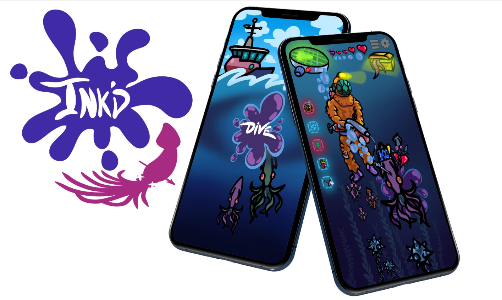
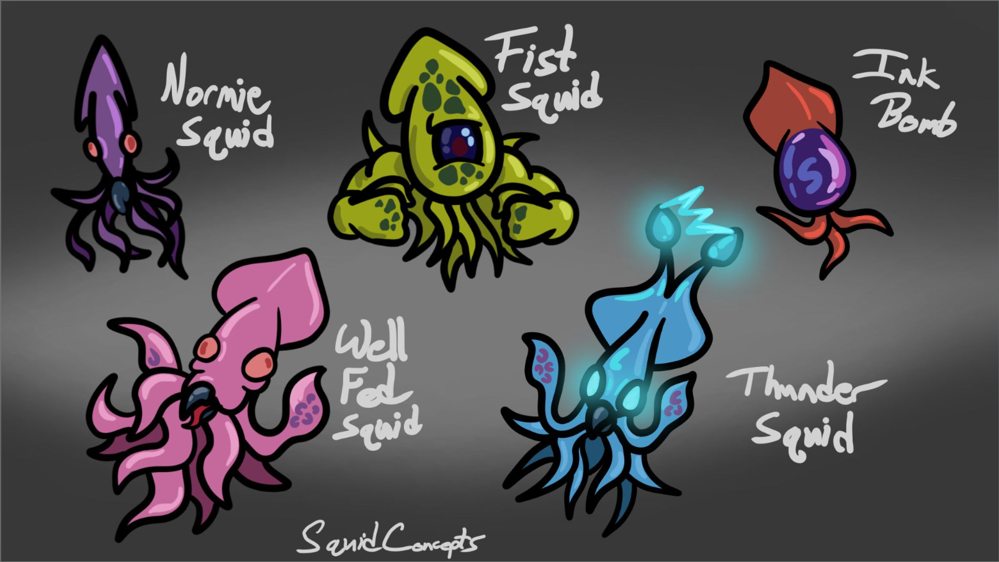
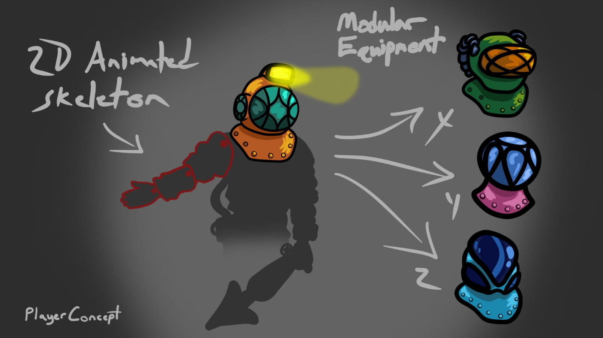
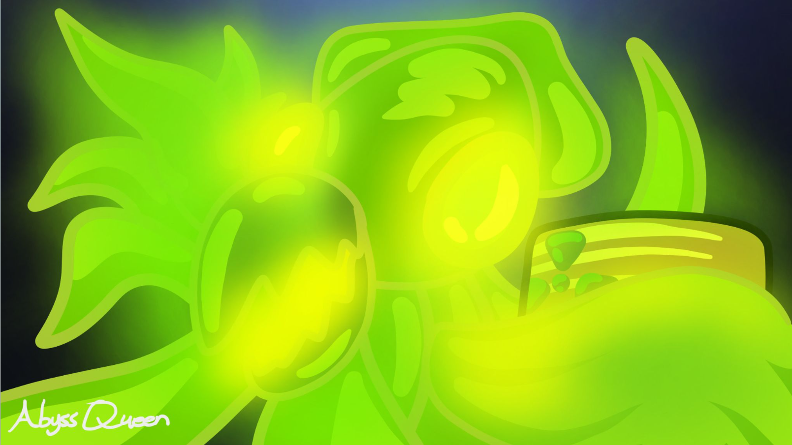
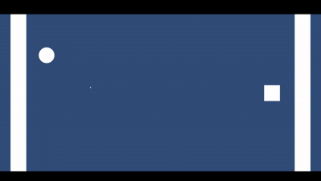

INK'D
The deeper you hunt, the more the ocean mutates against you.
A casual mobile arcade-roguelite designed for simple, offline play in your spare time.
The Team
William Cazayoux
Team Lead
Full completion of CAS 117; Specialist in game concept writing and team communications.
Chris Chung
Tech Lead
Infrastructure lead with a focus on game development technology and performance.
Carrington Smith
Design Lead
Expert in player experience and refining complex game mechanics and systems.
John Gronda
Art Lead
Background in fine arts and graphic design; Specialist in 2D game art and aesthetics.
Market Analysis
We compete with successful titles like Alto’s Odyssey, Dead Cells, and Stardew Valley. While these games are abundant, the turnover at the top creates space for new entries.
Our Edge: INK'D stands out through its unique Mutation RNG system and a high-stakes "Risk vs. Reward" progression loop that keeps players hooked.
The Setting: Radioactive Deep
An atomic bomb rests at the bottom of a deep ocean, leaking radioactive gas that causes abnormal wildlife mutations. Specialized divers are sent to neutralize these threats before they reach the land.
Core Game Loop
Navigate hazards like mines and radiation zones.
Avoid poisonous ink attacks and use tools to successfully capture threats.
Spend earnings on oxygen capacity, weapons, and mobility.
Dive deeper for rarer mutations or attempt the final boss.
Art Direction & UX
Visuals are inspired by minimalistic 2D game art, featuring 2D animated skeletons and modular equipment sets designed for casual immersion.
Audio Experience: A buoyant, "silly," and submerged atmosphere.
Technical Infrastructure
Built for mobile and tuned for performance, our foundation ensures smooth gameplay through specific technical solutions:
- Modular Spawning System: Divides the ocean into depth biomes with Y-coordinate algorithms for balanced distribution.
- Object Pooling: Recycles assets off-screen to prevent battery drain and lag spikes.
- Mutation RNG: A unique procedural system ensuring no two dives are identical.
Project Roadmap
- Months 1-2: Core descent loop, touch catching, and first biome spawner.
- Month 3: Upgrade shop systems, Boss Squid AI, and Radiation logic.
- Month 4: Narrative polish, story lines, integrated tutorials, and SFX/Music.
- Month 5: QA, bug fixes, and performance testing for iOS and Android.
Concept Art 1

Concept Art 2

Concept Art 3

Demo Video
